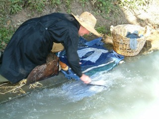

Depuis les temps les plus reculés, le lavage domestique du linge est une activité périodique dévolue à la femme. Elle s'effectue à un point d'eau : fontaine, mare, étang, cours d'eau… Au XIXe et au début du XXe siècle, avec les progrès de l'hygiène, des locaux plus confortables et fonctionnels, alimentés par une source ou une rivière, sont aménagés par les municipalités.
Dans les lavoirs, les lavandières, à genoux, avec des gestes immuables, battent, frottent, rincent et essorent le linge. Les journées sont longues et épuisantes, surtout pour les laveuses professionnelles, qui travaillaient parfois plus de 15 heures, tant qu'il faisait jour. On disait des plus fatiguées qu'elles étaient ramenées chez elles par leurs brouettes.
Il est de tradition de dire que, dans ces espaces de vie réservés aux femmes, les langues sont aussi vives que les battoirs ! La tutelle masculine y était rejetée. Dans les cafés, loin des oreilles féminines, les hommes faisaient les farauds en parlant de l'hôtel des bavardes, du moulin à paroles, de la chambre des députés, et prétendaient qu'au lavoir on blanchit mal le linge mais qu'on salit bien les gens !
Encore maintenant, de nombreuses expressions populaires ont trait à la lessive : une soupe à l'eau de lessive, lessiver sa montre. Faire une lessive de Gascon, c'est retourner son linge sale au lieu de le laver.
Les lavoirs évoquent une période aujourd'hui révolue. À partir des années 1950, la machine à laver devient rapidement l'outil indispensable de chaque foyer, mettant fin à une corvée redoutable. Peu à peu désertés, les lavoirs sont souvent abandonnés aux ronces et à l'écroulement. Témoins de la vie d'autrefois, ils font partie des édifices à conserver : ils sont l'un des éléments de notre patrimoine rural.

La lessive : une affaire de femmes
Les grandes lessives, encore appelées grandes buées, sont des temps majeurs dans l'activité des femmes. Dès le XIIe siècle, la lessive du gros linge se fait une fois l'an, après les fêtes de Pâques, puis deux fois l'an, voire trois fois au XIXe siècle. À côté de ces temps forts, il y a naturellement des lessives plus modestes, les petites buées, mais tout aussi compliquées : le fameux jour de lessive de nos grands-mères.
Les grandes buées se déroulent sur trois jours selon un rite immuable :
- Le premier jour, le linge, une fois trié, est déposé dans un cuveau, les pièces les plus sales d'abord (torchons, draps, chemises…). La ménagère verse ensuite l'eau froide par-dessus et le linge trempe toute la nuit pour éliminer les premières taches.
- Le lendemain matin, l'eau est vidée et le linge est recouvert d'une toile de chanvre (le charrier) sur laquelle on étale des cendres de bois sur 10 à 15 centimètres d'épaisseur : grâce à leur richesse en carbonate de potasse, elles jouent le rôle d'agent nettoyant. Au début du XXe siècle, les cendres seront remplacées par des cristaux de soude. Souvent, on mélange aux cendres des essences de plantes pour parfumer et blanchir le linge (laurier, oignons d'iris, lavande, thym, orties). Pendant ce temps, de grandes quantités d'eau sont chauffées dans un chaudron. Commence alors le coulage : à l'aide d'un petit récipient prolongé d'un long manche en bois, l'eau bouillante est versée sur le linge. Elle passe du sommet à la base de la cuve, emportant les produits actifs des cendres qui nettoient le linge. L'eau récupérée à la base par la pisserotte, dans un seau placé sous la bonde du cuveau, est à nouveau réchauffée et l'opération se répète inlassablement pendant des heures (15 à 20 heures généralement…). Chaque laveuse, en fonction de l'expérience acquise, sait quand il faut arrêter le coulage.
- Le troisième jour, c'est le lavage. Le linge est retiré du cuveau, mis dans des baquets en bois ou dans des paniers d'osier posés sur la brouette, puis emmené par la laveuse au lavoir. Là, au prix de gros efforts, il est savonné sur la margelle inclinée afin de faire disparaître les taches rebelles, brossé, frappé au battoir (ou tapoir) pour faire pénétrer le savon dans les fibres, puis rincé à plusieurs reprises et enfin essoré.
Divers objets étaient utilisés par la laveuse : la brosse de chiendent, le pain de savon, le carrosse (boîte en bois garnie d'un coussin ou de paille pour se protéger de l'humidité), la planche à laver, le devantier (sorte de grand tablier)… Quand tout est terminé, le linge est ramené au foyer pour y être séché sur des cordelettes ou sur des tréteaux, ou encore étendu à même l'herbe des prés ou sur les buissons environnants…
L'essor des lavoirs au XIXe siècle
Si les premiers bâtiments réservés au lavage apparaissent au XVIIIe siècle, c'est au siècle suivant qu'ils vont proliférer dans tout l'Hexagone. La création des lavoirs s'inscrit dans un contexte général de prise de conscience collective de l'importance de la salubrité publique et des principes élémentaires d'hygiène.
Le choléra, la variole et la typhoïde sévissent encore au XIXe siècle. Les progrès de la médecine invitent à mieux surveiller l'eau, et l'évolution des techniques permet de mieux maîtriser son acheminement. Dans la seconde moitié du XIXe siècle, la propreté devient l'objet d'un véritable culte : on encourage l'entretien du linge et la spécialisation des lieux et des usages de l'eau.
Le 3 décembre 1851, l'Assemblée législative vote un crédit de 600 000 francs destiné à la construction des lavoirs publics, mais les éternelles lenteurs administratives retardent l'exécution du projet des municipalités.
Une architecture de la vie quotidienne à sauvegarder
Édifiés à ciel ouvert ou couverts, près d'un cours d'eau, à proximité d'une source ou encore d'une fontaine, les lavoirs qui subsistent aujourd'hui se ressemblent beaucoup. Le plus souvent, c'est un bassin rectangulaire entouré d'une surface inclinée en béton, protégé d'un toit couvert en ardoises dont la charpente s'appuie sur quatre ou six poteaux de bois. Mais certains lavoirs ont échappé à la standardisation des types et des matériaux de construction : ici et là, on rencontre des bassins de pierre de forme rectangulaire, carrée, circulaire ou ovale, qui font honneur à notre petit patrimoine rural.
Abandonnés depuis un quart de siècle, ces « temples de l'eau » deviennent des lieux de mémoire où résonnent l'écho des battoirs et des bavardages. Mais qu'en est-il de ces lavoirs qui furent si utiles à nos villageois ? Aujourd'hui, chacun possède sa machine à laver ultra-perfectionnée et rapide, qui chauffe, lave, rince, essore et sèche en utilisant des produits plus mirobolants (et polluants) les uns que les autres.
Les lavoirs d'Autrêches
Dans notre village, celui de Chevillecourt est assez bien conservé : il possède encore sa toiture et l'eau y coule toujours. Pourquoi ne pas le remettre en état ? Celui d'Hautebraye est abandonné, mais pourrait facilement être réparé et conservé. Quant à celui de Massenancourt, qui était une belle construction en bois, il disparaît peu à peu sous la végétation : il est complètement envasé et le cours d'eau qui l'alimentait l'enserre maintenant dans ses méandres. Il serait nécessaire de le dégager et de le signaler.
Il en existe d'autres, encore plus anciens, du côté de la mairie et vers la rue de l'ancien pressoir ; je pense que chaque ferme possédait son lavoir particulier…